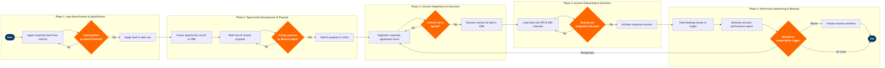

| Step | L4 Step Name | KPI / Target | Pain Point / Risk | Gate |
|---|---|---|---|---|
| 1.1 | Ingest corporate lead from partner referral | Lead response time ≤4 hours; lead conversion rate ≥25% | Leads arriving via multiple channels (Sabre PRISM, direct email, NDC API) have no unified ingestion point — manual entry causes data gaps and delayed response | |
| 1.2 | Score and qualify lead by spend threshold | Lead qualification accuracy ≥80%; disqualification rate ≤40% | Salesforce lead scoring models are not calibrated against actual ticket revenue data from Amadeus Altéa PSS, resulting in mis-scoring of high-value accounts | ⚠ |
| 1.3 | Assign qualified lead to regional sales rep | Assignment turnaround ≤2 hours; SLA acknowledgement by rep ≤24 hours | Territory alignment rules in Salesforce are manually maintained and lag behind network route changes, causing mis-assignment of accounts near new city-pair launches | |
| 2.1 | Create opportunity record and discovery call | Discovery-to-proposal cycle time ≤5 business days | Sales reps manually key in travel volume data from client spreadsheets; no API integration with SAP Concur or Egencia to import actual managed travel spend | |
| 2.2 | Model fare & volume proposal with RM inputs | Proposal margin ≥ target contribution per O&D; average corporate discount ≤14% off published fare | Revenue Management team must be consulted manually for each proposal; no self-service fare modelling tool for sales reps, causing bottlenecks when RM team is capacity-constrained | |
| 2.3 | Submit proposal for RM and pricing approval | RM approval turnaround ≤48 hours; approval rate on first submission ≥70% | Approval workflow is email-based with no SLA enforcement; pricing decisions are lost outside Salesforce audit trail, creating compliance risk under ATPCO corporate fare filing rules | ⚠ |
| 2.4 | Submit approved proposal to corporate client | Proposal acceptance rate ≥55%; time-to-response from client ≤7 business days | Proposal documents are generated from Word templates rather than CRM-native output, leading to version mismatches and unapproved fare terms being quoted | |
| 3.1 | Negotiate corporate agreement terms with client | Negotiation cycle time ≤10 business days; concession rate (additional discount) ≤3% | Negotiation concessions (extra discount, waived change fees) are granted ad hoc without systematic tracking, eroding yield across the corporate portfolio without visibility to Finance | ⚠ |
| 3.2 | Execute contract and record in CRM | Contract execution time ≤3 business days post-agreement; 100% of contracts stored in Salesforce with expiry date populated | DocuSign / e-signature integration with Salesforce is not enforced; some reps email PDF contracts outside CRM, breaking the audit trail and renewal reminder automation | |
| 4.1 | Load negotiated fares into PSS and GDS channels | Fare load accuracy 100%; time from contract execution to fare availability ≤2 business days | Manual fare loading into Altéa and ATPCO filing are separate processes with no automated handoff from Salesforce contract record, creating a window where the corporate account is active but fares are not yet bookable | |
| 4.2 | Configure corporate account in booking tool and TMC | Configuration accuracy rate ≥99%; TMC test booking success rate 100% before go-live | Sabre PRISM configuration must be done separately from Altéa PSS fare loading; mismatches between the two systems cause TMC booking failures that are only discovered by the corporate traveller | ⚠ |
| 4.3 | Activate corporate account and confirm with client | Time from contract execution to account activation ≤3 business days; activation CSAT ≥4.2/5 | No automated trigger from Altéa or Sabre PRISM back to Salesforce to confirm fare go-live; sales reps manually chase Distribution Ops, delaying client communication and eroding trust in the onboarding process | |
| 5.1 | Track corporate booking volume against contract targets | Volume attainment ≥90% of contracted threshold; on-time scorecard delivery by 5th of each month | Altéa booking data is not directly piped into Salesforce opportunity tracking; reporting requires manual extracts and reconciliation in Tableau, introducing a 5–7 day data lag that slows account intervention | |
| 5.2 | Conduct quarterly business review with corporate client | QBR completion rate 100% for accounts >$500K ARR; action item close rate ≥80% within 30 days | OAG market share data and Sabre PRISM share-of-wallet reports are not integrated into Salesforce, requiring manual assembly of QBR materials and reducing time available for strategic client discussion | |
| 5.3 | Assess contract renewal or renegotiation trigger | Renewal rate ≥85% for accounts meeting volume thresholds; renewal initiated ≥90 days before expiry | Salesforce contract expiry alerts are often suppressed or ignored; accounts have lapsed without renewal, forcing expensive re-acquisition through GDS channels at higher distribution cost | ⚠ |